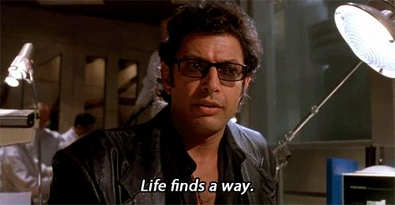
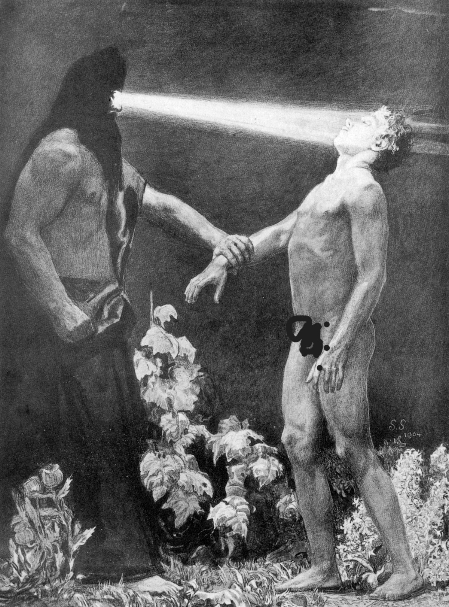

Common Themes and Examples
On this page, we're going to go over three common themes that come up in Sci-Fi and some examples of stories that touch upon them.
Common Themes
- The Balance Between Threat and Dangers Posed by AI
- The Untamable Nature of Life
- The Unknown, Or How What We Don't Know May Hurt Us
The Balance Between Threats and Dangers Posed by AI

AI is easily one of the most common subject of a Sci-Fi Author's ire, and it's easy to see why: There is no end to what may go wrong when it comes to consigning the reins of the world to beings built for efficiency, you may find yourself a redundancy. AI in stories represent humans reaching for the ultimate form of control, playing god and expecting it to go how they want, forgetting how people act under attempts of control.
Examples
The Untamable Nature of Life, Predator to Prey, and Change in Hierarchy
In other words,
From the first spark of the first fire, our species has sought to become the master of our environment. We pride ourselves on ingenuity, figuring out the unknowable, and becoming the master of our world through clever thinking and opposable thumbs. No rock can go unturned, we either domesticate or destroy, or in many cases, both. This theme asks, what if we reckoned with what we can't overcome? The idea that something can completely overrule our dominion is horrifying. Sci-Fi movies like Alien, Jurassic Park, Indepedence Day, or Annihilation play with this notion, reversing our seemingly undeniable position as the apex species. This kind of horror asks how we would react if put in the position of the dissected, the displaced, and defenseless.
Examples
The Unknown, Or How What We Don't Know May Hurt Us
There is a shadow that follows the beacon we call progress, a silent understanding that what we take as fact creates a brittle foundation threatened to fracture or even capsize at any moment. Progress is fickle that way, going further in one direction may cause you to loop around and find that what you considered a given was only working that way due to your limited understanding. Essentially, there's always a bigger fish. Alot of sci-fi posits the idea that as safe and secure as our understandng may seem, it's always one discovery away from being turned upside down. The universe is too big for our logic to completely ensnare it, there will always be an exception to our rules. Arrival, Interstellar, Lovecraft's Mythos, Mass Effect, Elden Ring. All of these stories contain moments where characters assume they have the answers, only to be humbled by a universe indifferent to their ambition.